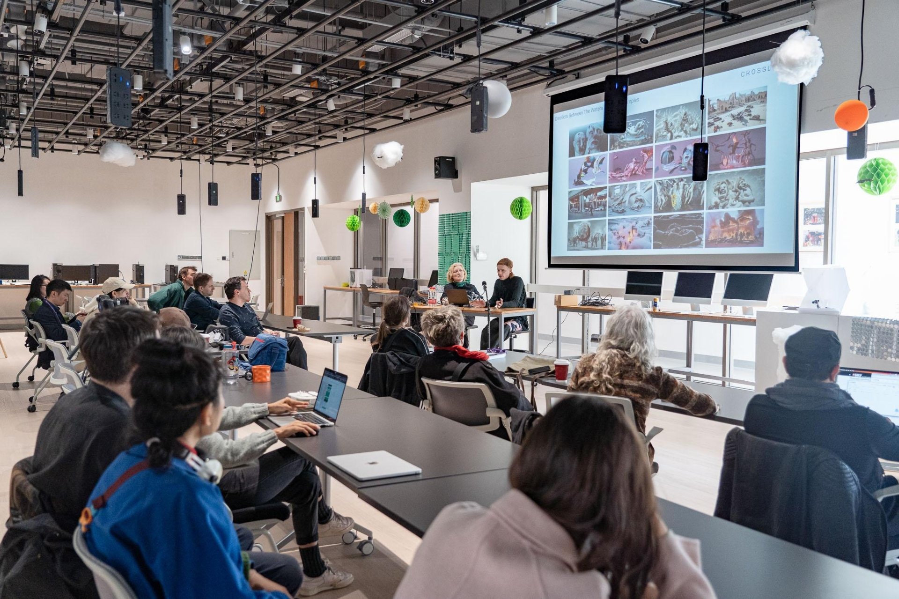
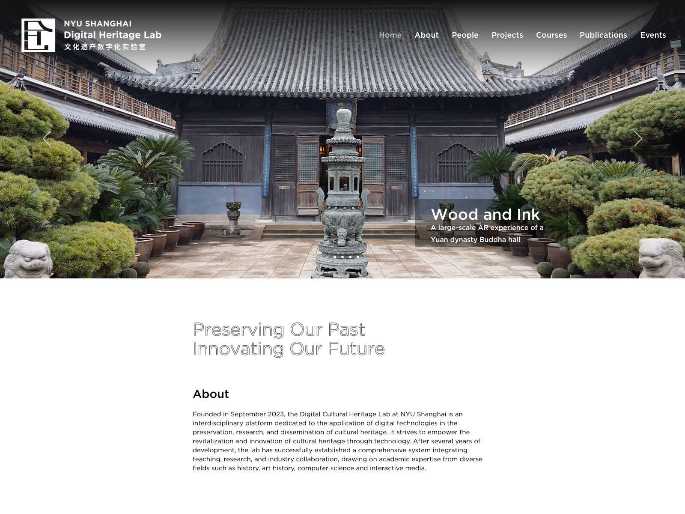

GAME DESIGN × AI AGENT · 20 MIN
不是 Prompt，是系统描述
From Prompt to System Description: Teaching Systems Thinking for Game Design with AI Agents
生活 → 系统 → 游戏
演讲者：张星晨 上海纽约大学艺术助理教授 · 文化遗产数字化实验室副主任
2026 年 8 月
02 · 关于我们
上海纽约大学 · 互动媒体艺术 (IMA)

IMA 是纽约大学 Tisch 艺术学院 ITP 项目合作创办的本科项目，2013 年在上海纽约大学落地——把艺术、设计与技术放进同一间教室，聚焦新兴媒体与人文价值的交叉。
源自 Tisch · ITP
ITP 是 1979 年创立的交互媒体研究生项目；上海 IMA 是其第一个本科版本，后推广至纽约与阿布扎比
四大基础课
Interaction Lab · Communications Lab · Creative Coding Lab · What's the New Media
交互 / 物理计算 · 网页多媒体 · 创意编程 · 媒介理论
做中学
文理教育框架内的项目制学习——从概念到可工作原型的完整训练
艺术 × 技术创意编程交互设计新媒体艺术物理计算
IMA 工作坊 / 课堂实景
03 · 关于我们
文化遗产数字化实验室 (DHL)

上海纽约大学 DHL 成立于 2023 年 9 月，隶属 Global China Studies 与 Center for Global Asia——用数字技术记录、重建与再呈现文化遗产，让"过去"成为可计算、可交互、可体验的数据。
方法 · 数字工具链
3D 扫描 · AR/VR 故事讲述 · AI 辅助分析——把物质遗产变成可计算的数据资产
案例 · 致未来的信
三林老街数字档案项目（CEL 体验设计工作坊）：14 名学生用 3D 扫描 + 口述历史为拆迁前的街区存档
跨学科 · 教学研究
历史 + 艺术史 + 计算机科学 + 互动媒体——课程、研讨会、产业合作三位一体
数字人文3D 扫描AR / VR口述历史沉浸式展示
截图来源：dhl.shanghai.nyu.edu
01 · 开场反差
2026 夏，一门实验
NYU Shanghai · IMA Game Design 夏令营滑冰 / 骑马 / 冰壶 / 帆船 / 冲浪 / 高尔夫…
01 · 开场反差
这些游戏，是怎么做出来的？
—— 不是靠写一段 prompt 写出来的。
一段文字描述
→
大模型 decode
→
程序 / 机制 / 输入输出
02 · 问题：Prompt 的局限
现在用 AI 做游戏，起点都是一段话
Prompt（一段话）
→
模型解码为程序
→
? 结果不可预期
- 线性 vs 非线性——游戏是系统（规则/变量/反馈），一段文字装不下
- decode 依赖模型能力——从文字到程序的跳跃全靠模型，不可预期
- 输出 ≠ 你的表达——再强的模型也做不出"你心目中的游戏"
02 · 问题：Prompt 的局限
游戏 ≠ 小说 / 电影
所以"喂一段话"不是偷懒，是接口错位。
03 · 主张与方法
接口应当是「系统描述」
vs
系统描述 System Description
- 结构化规格，AI 可执行
- 目标体验 / 核心循环
- 变量 / 规则 / 输入输出 / 反馈 / 挑战
03 · 主张与方法
推论
拥有系统化设计的能力，
是 AI 时代用游戏进行自我表达的一项基础能力。
03 · 主张与方法
夏令营：一次可教性实验
Session 1 · 玩中学
INSIDE 分析
不只问好不好玩，还问它如何教人
Session 2 · 设计
开发摘要 + 系统图
把经历抽象为系统（系统描述成型）
Session 3 · AI 开发
从设计文件到可玩游戏
AI 构建 + 学生判断
你创造，AI 协助
开发摘要（Markdown）
系统图（PNG）
agent-development-log.md
04 · 证据
证据一：从经历到系统图
帆船 · Sailer Game
新手以为帆船是指向目标；
专家知道帆船是读风——调整帆、船与航路的关系。
一段真实经历 → 核心学习转变 → 系统图

学生系统图 · Sailer Game（group-04）
04 · 证据
证据二：系统描述 → 可玩 demo

滑冰 · A Skating Novice（备选主案例，含录屏）
- 系统图里的变量与规则 → 游戏里真实存在（风向 / 帆角 / 船速…）
- 学生试玩、判断、取舍，AI 负责实现与迭代
- 结果可预期——因为规格是明确的
04 · 证据
证据三：agent 日志 = 工作流真实运行
① Student Request
学生输入
给 AI 开发摘要 + 系统图
② Agent Response
AI 执行
复述规格 → 建骨架 → 实现
③ Student Decision
学生判断
未确认前，不进下一步
三层结构 = 分工协议的活证据：AI 执行，人判断。
04 · 证据
作品墙：可教、可规模化
滑冰骑马冰壶攀岩
冲浪自行车滑雪高尔夫
帆船无人机厨房歌剧
射箭甜品店急救…30+ 款
同一套方法，不同的生活经验与领域。
gallery 在线展览：xingchen-ian.github.io/domain-learning-camp
05 · 讨论与展望
三条洞见
① 接口比模型重要
决定输出质量的，往往不是模型有多强，而是你给它什么形式的规格
② 系统化思考可教
0 编程基础的高中生能学会——它是素养，不是天赋
③ 判断仍在人
AI 提供实现，人决定"为什么值得做"（你创造，AI 协助）
05 · 讨论与展望
局限与开放问题
局限
样本 30 人 · 时长短 · 作品质量参差 · 单一文化语境
开放问题
系统描述的最小充分形式是什么？能否推广到非游戏设计领域？
AI 工具界面，是否应从"prompt 框"进化到「系统编辑器」？
05 · 结论
游戏设计来自生活——
把生活变成游戏的那个能力，叫系统化设计。
AI 时代，它第一次成为
人人都需要的基础表达能力。
问题：Prompt 的局限主张：系统描述证据：夏令营 30+ 作品
感谢聆听 · Q&A